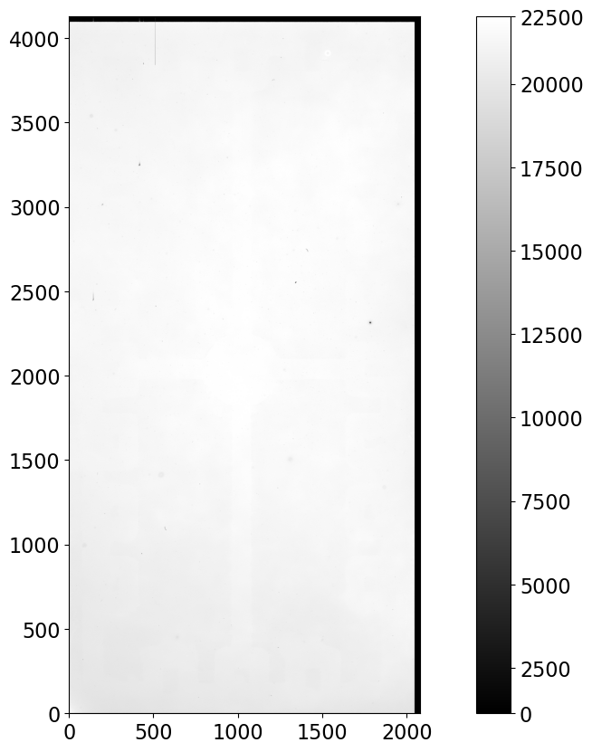
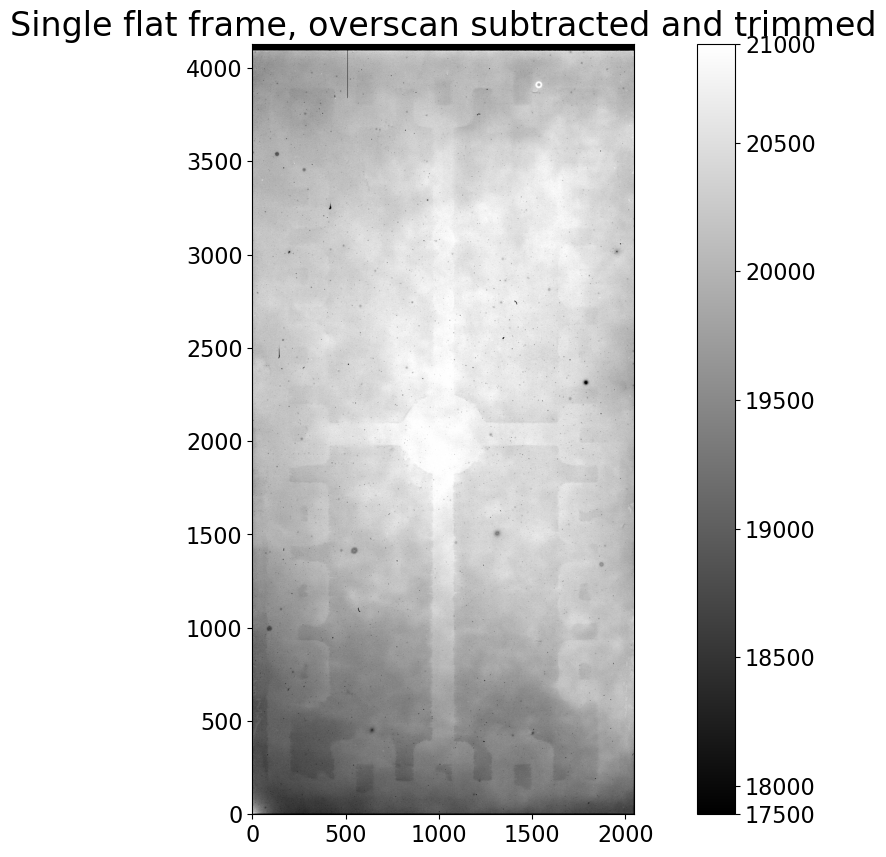
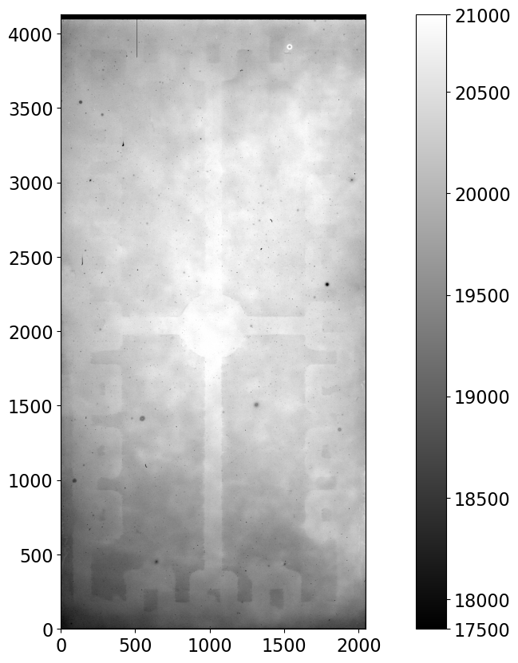

Калибровка flat-кадров
Contents
4.2. Калибровка flat-кадров#
Напомним, что отсчёты в астрономическом изображении включают dark current, шум и
почти постоянное смещение — bias. Отдельные flat-кадры нужно очистить от bias и
dark. В зависимости от экспозиций ваших изображений dark и bias можно вычитать
раздельно или вместе.
Если комбинированный dark нужно масштабировать под другое время экспозиции, то
bias и dark нужно обрабатывать отдельно; в противном случае dark и bias можно
убрать за один шаг, потому что dark-кадры тоже содержат bias.
Возможные шаги редукции flat-кадров перечислены ниже:
Вычесть overscan и обрезать, если нужно.
Вычесть bias, если нужно.
Вычесть dark current, масштабируя при необходимости (когда можно — масштабируйте вниз).
Как и в главах про bias и dark, мы разберём два примера. В примере 1 dark не
масштабируются, и область overscan используется в калибровке. В примере 2 dark
масштабируются, а область overscan отрезается и не используется.
4.2.1. Определение функции#
Функция ниже находит ближайшее время экспозиции dark к экспозиции заданного
изображения. Исключение выбрасывается, если разница по экспозиции больше, чем
tolerance, если только tolerance не задано как None. Небольшая численная
погрешность полезна, если вы планируете не масштабировать dark и хотите найти
dark с временем экспозиции, близким к экспозиции изображения. Игнорирование
tolerance удобно, если dark всё равно будут масштабироваться.
def find_nearest_dark_exposure(image, dark_exposure_times, tolerance=0.5):
"""
Find the nearest exposure time of a dark frame to the exposure time of the image,
raising an error if the difference in exposure time is more than tolerance.
Parameters
----------
image : astropy.nddata.CCDData
Image for which a matching dark is needed.
dark_exposure_times : list
Exposure times for which there are darks.
tolerance : float or ``None``, optional
Maximum difference, in seconds, between the image and the closest dark. Set
to ``None`` to skip the tolerance test.
Returns
-------
float
Closest dark exposure time to the image.
"""
dark_exposures = np.array(list(dark_exposure_times))
idx = np.argmin(np.abs(dark_exposures - image.header['exptime']))
closest_dark_exposure = dark_exposures[idx]
if (tolerance is not None and
np.abs(image.header['exptime'] - closest_dark_exposure) > tolerance):
raise RuntimeError('Closest dark exposure time is {} for flat of exposure '
'time {}.'.format(closest_dark_exposure, image.header['exptime']))
return closest_dark_exposure
from pathlib import Path
from astropy import units as u
from astropy.nddata import CCDData
import ccdproc as ccdp
from matplotlib import pyplot as plt
import numpy as np
from convenience_functions import show_image
# Use custom style for larger fonts and figures
plt.style.use('guide.mplstyle')
4.2.2. Пример 1: dark-кадры без масштабирования#
Изображения для этого примера получены с чипа 0 Large Format Camera в
обсерватории Паломар. Необработанные изображения лежат на Zenodo, и здесь предполагается,
что вы прошли блокноты по bias и dark так, что в той же папке, что и этот
блокнот, есть папка example1-reduced.
Мы пройдём этот пример дважды: сначала на одном изображении, чтобы разобрать
каждый шаг, затем обработаем все flat-кадры в каталоге raw-данных.
Ниже определяется коллекция изображений и несколько настроек, полезных для
этого примера.
reduced_path = Path('example1-reduced')
ifc_reduced = ccdp.ImageFileCollection(reduced_path)
combined_dark_files = ifc_reduced.files_filtered(imagetyp='dark', combined=True)
flat_image_type = 'FLATFIELD'
Сырые данные должны находиться в каталоге example-cryo-LFC.
raw_data = Path('example-cryo-LFC')
ifc_raw = ccdp.ImageFileCollection(raw_data)
Ячейка ниже проверяет, что нужные файлы доступны.
n_combined_dark = len(combined_dark_files)
expected_exposure_times = set([7, 70, 300])
if n_combined_dark < 3:
raise RuntimeError('One or more combined dark is missing. Please re-run the dark notebook.')
elif n_combined_dark > 3:
raise RuntimeError('There are more combined dark frames than expected.')
actual_exposure_times = set(h['exptime'] for h in ifc_reduced.headers(imagetyp='dark', combined=True))
if (expected_exposure_times - actual_exposure_times):
raise RuntimeError('Encountered unexpected exposure time in combined darks. '
'The unexpected times are {}'.format(actual_exposure_times - expected_exposure_times))
Сначала получим один flat-кадр как объект CCDData и отобразим его.
a_flat = CCDData.read(ifc_raw.files_filtered(imagetyp='flatfield', include_path=True)[0], unit='adu')
show_image(a_flat, cmap='gray')
WARNING: FITSFixedWarning: 'datfix' made the change 'Set MJD-OBS to 57403.000000 from DATE-OBS'. [astropy.wcs.wcs]
WARNING:astropy:FITSFixedWarning: 'datfix' made the change 'Set MJD-OBS to 57403.000000 from DATE-OBS'.
WARNING: The following attributes were set on the data object, but will be ignored by the function: meta, unit [astropy.nddata.decorators]
WARNING:astropy:The following attributes were set on the data object, but will be ignored by the function: meta, unit

Здесь мало вариаций. Отметьте, что область overscan справа выделяется как
чёрная полоса, и, по-видимому, есть overscan и вдоль верхней кромки чипа.
Кажется, есть лёгкий градиент значений пикселей снизу вверх по изображению.
4.2.2.1. Вычесть overscan и обрезать, если нужно#
Overscan полезен для LFC и его нужно вычесть и обрезать. См. [этот пример в
блокноте про dark-редукцию](03-05-Calibrate-dark-images.ipynb#decide-which-calibration-steps-to-take) для напоминания параметров overscan.
Область overscan — это срез Python [:, 2055:], а область, которую нужно
оставить после обрезки, — срез Python [:, :2048].
# Subtract the overscan
a_flat_reduced = ccdp.subtract_overscan(a_flat, overscan=a_flat[:, 2055:], median=True)
# Trim the overscan
a_flat_reduced = ccdp.trim_image(a_flat_reduced[:, :2048])
# Display the result so far
show_image(a_flat_reduced, cmap='gray')
plt.title('Single flat frame, overscan subtracted and trimmed')
Text(0.5, 1.0, 'Single flat frame, overscan subtracted and trimmed')

Обрезка overscan даёт такой заметный эффект в основном из-за изменения растяжки
изображения: минимальные значения теперь около 18000 вместо 2000. С этим
изменением неоднородность по детектору видна гораздо отчётливее.
4.2.2.2. В этом примере bias вычитать не нужно#
Для этого набора изображений есть dark с экспозициями 7, 70 и 300 с. Flat-кадры
имеют времена экспозиции, показанные ниже:
set(ifc_raw.summary['exptime'][ifc_raw.summary['imagetyp'] == 'FLATFIELD'])
{np.float64(7.0), np.float64(70.001), np.float64(70.011)}
Они достаточно близки к экспозициям dark-кадров, так что масштабировать dark не
нужно. Если dark не масштабируются, то нет необходимости вычитать bias.
4.2.2.3. Вычесть dark current; в этом примере масштабирование не нужно#
Нужно вычесть dark без масштабирования. Вместо ручного подбора мы используем
dark с экспозицией, ближайшей к экспозиции flat, с допуском 1 секунда, чтобы
не взять dark с слишком отличным временем экспозиции.
Сначала найдём время экспозиции dark, ближайшее к flat. Это понадобится позже в
блокноте, поэтому определим функцию для этого.
closest_dark = find_nearest_dark_exposure(a_flat_reduced, actual_exposure_times)
Удобно получить доступ к dark через словарь с ключом — временем экспозиции, так
что настроим это ниже.
combined_darks = {ccd.header['exptime']: ccd for ccd in ifc_reduced.ccds(imagetyp='dark', combined=True)}
WARNING: FITSFixedWarning: 'datfix' made the change 'Set MJD-OBS to 57460.000000 from DATE-OBS'. [astropy.wcs.wcs]
WARNING:astropy:FITSFixedWarning: 'datfix' made the change 'Set MJD-OBS to 57460.000000 from DATE-OBS'.
Далее вычтем dark из flat и отобразим результат.
a_flat_reduced = ccdp.subtract_dark(a_flat_reduced, combined_darks[closest_dark],
exposure_time='exptime', exposure_unit=u.second, scale=False)
show_image(a_flat_reduced, cmap='gray')
WARNING
: The following attributes were set on the data object, but will be ignored by the function: uncertainty, mask, meta, unit [astropy.nddata.decorators]
WARNING:astropy:The following attributes were set on the data object, but will be ignored by the function: uncertainty, mask, meta, unit

Здесь мало изменений; это неудивительно, потому что dark current у этой камеры
низкий.
4.2.2.4. Калибровка всех flat-кадров в папке#
Ячейка ниже калибрует каждый flat в папке, автоматически беря подходящий
комбинированный dark для каждого flat.
for ccd, file_name in ifc_raw.ccds(imagetyp='FLATFIELD', # Just get the bias frames
ccd_kwargs={'unit': 'adu'}, # CCDData requires a unit for the image if
# it is not in the header
return_fname=True # Provide the file name too.
):
# Subtract the overscan
ccd = ccdp.subtract_overscan(ccd, overscan=ccd[:, 2055:], median=True)
# Trim the overscan
ccd = ccdp.trim_image(ccd[:, :2048])
# Find the correct dark exposure
closest_dark = find_nearest_dark_exposure(ccd, actual_exposure_times)
# Subtract the dark current
ccd = ccdp.subtract_dark(ccd, combined_darks[closest_dark],
exposure_time='exptime', exposure_unit=u.second)
# Save the result; there are some duplicate file names so pre-pend "flat"
ccd.write(reduced_path / ('flat-' + file_name))
4.2.3. Пример 2: dark-кадры масштабируются#
Изображения в этом примере, как и в предыдущих блокнотах, получены на
термоэлектрически охлаждаемом CCD, описанном подробнее в
Мы пройдём этот пример дважды: сначала на одном изображении, чтобы разобрать
каждый шаг, затем обработаем все flat-кадры в каталоге raw-данных.
Ниже определяется коллекция изображений и несколько настроек, полезных для
этого примера.
reduced_path = Path('example2-reduced')
ifc_reduced = ccdp.ImageFileCollection(reduced_path)
combined_dark_files = ifc_reduced.files_filtered(imagetyp='dark', combined=True)
flat_image_type = 'FLAT'
Сырые данные должны находиться в каталоге example-thermo-electric.
raw_data = Path('example-thermo-electric')
ifc_raw = ccdp.ImageFileCollection(raw_data)
Ячейка ниже проверяет, что нужные файлы доступны.
n_combined_dark = len(combined_dark_files)
n_dark_expected = 1
expected_exposure_times = set([90])
if n_combined_dark < n_dark_expected:
raise RuntimeError('One or more combined dark is missing. Please re-run the dark notebook.')
elif n_combined_dark > n_dark_expected:
raise RuntimeError('There are more combined dark frames than expected.')
actual_exposure_times = set(h['exptime'] for h in ifc_reduced.headers(imagetyp='dark', combined=True))
if (expected_exposure_times - actual_exposure_times):
raise RuntimeError('Encountered unexpected exposure time in combined darks. '
'The unexpected times are {}'.format(actual_exposure_times - expected_exposure_times))
---------------------------------------------------------------------------
RuntimeError Traceback (most recent call last)
Cell In[16], line 7
4 expected_exposure_times = set([90])
6 if n_combined_dark < n_dark_expected:
----> 7 raise RuntimeError('One or more combined dark is missing. Please re-run the dark notebook.')
8 elif n_combined_dark > n_dark_expected:
9 raise RuntimeError('There are more combined dark frames than expected.')
RuntimeError: One or more combined dark is missing. Please re-run the dark notebook.
Сначала получим один flat-кадр как объект CCDData и отобразим его.
a_flat = CCDData.read(ifc_raw.files_filtered(imagetyp='flat', include_path=True)[0], unit='adu')
show_image(a_flat, cmap='gray')
Паттерн вариации на сенсоре здесь сильно отличается от примера 1. Несколько
«бубликов» на изображении — это пылинки, а также заметно виньетирование
(затемнение) в верхних и нижних углах справа.
4.2.3.1. Вычесть overscan и обрезать: для этой камеры только обрезка#
Overscan для этой камеры бесполезен. Область, которую нужно оставить после
обрезки, — срез Python [:, :4096].
# Trim the overscan
a_flat_reduced = ccdp.trim_image(a_flat[:, :4096])
# Display the result so far
show_image(a_flat_reduced, cmap='gray')
plt.title('Single flat frame, overscan trimmed')
Обрезка overscan не дала большого визуального эффекта, в основном потому, что область overscan для этой камеры не полезна. Полезный overscan имел бы значения близко к уровню bias для этой камеры, около 1200 отсчётов. Растяжка изображения немного изменилась; ранее нижняя граница шкалы цветов была 38000, а теперь 40000.
4.2.3.2. Вычесть bias необходимо#
Для этого конкретного набора изображений есть комбинированный dark с временем экспозиции 90 сек. Flat-кадры имеют времена экспозиции, перечисленные ниже:
set(ifc_raw.summary['exptime'][ifc_raw.summary['imagetyp'] == 'FLAT'])
Эти значения сильно отличаются от времени экспозиции dark-кадров, поэтому dark нужно будет масштабировать по времени экспозиции, что означает, что bias был удалён из комбинированного dark.
Из-за этого bias нужно вычесть из flat перед вычитанием dark.
combined_bias = list(ifc_reduced.ccds(combined=True, imagetyp='bias'))[0]
a_flat_reduced = ccdp.subtract_bias(a_flat_reduced, combined_bias)
# Display the result so far
show_image(a_flat_reduced, cmap='gray')
plt.title('Single flat frame, overscan trimmed and bias subtracted');
Кроме изменения масштаба изображения, отображаемого на цветовой шкале, нет большой визуальной разницы после вычитания bias.
4.2.3.3. Вычесть dark current, масштабируя при необходимости#
Здесь нужно масштабировать dark с 90 сек экспозиции dark-кадра к времени
экспозиции каждого flat-кадра. Функция ccdproc subtract_dark предоставляет ключевые слова для автоматического масштабирования.
closest_dark = find_nearest_dark_exposure(a_flat_reduced, actual_exposure_times, tolerance=100)
Будет удобнее получать доступ к dark через словарь, ключ которого — время экспозиции, поэтому настроим это ниже.
combined_darks = {ccd.header['exptime']: ccd for ccd in ifc_reduced.ccds(imagetyp='dark', combined=True)}
combined_darks
Далее вычтем dark из flat и отобразим результат.
a_flat_reduced = ccdp.subtract_dark(a_flat_reduced, combined_darks[closest_dark],
exposure_time='exptime', exposure_unit=u.second, scale=True)
show_image(a_flat_reduced, cmap='gray')
Нет большого изменения; это не удивительно, так как dark current в этой камере низкий.
4.2.3.4. Калибровка всех flat-кадров в папке#
Ячейка ниже калибрует каждый flat в папке, автоматически беря подходящий комбинированный dark для каждого flat.
for ccd, file_name in ifc_raw.ccds(imagetyp='FLAT', # Just get the bias frames
return_fname=True # Provide the file name too.
):
# Trim the overscan
ccd = ccdp.trim_image(ccd[:, :4096])
# Find the correct dark exposure
closest_dark = find_nearest_dark_exposure(ccd, actual_exposure_times, tolerance=100)
# Subtract the dark current
ccd = ccdp.subtract_dark(ccd, combined_darks[closest_dark],
exposure_time='exptime', exposure_unit=u.second, scale=True)
# Save the result
ccd.write(reduced_path / file_name)